Examples#
This gallery walks through every public feature of mathematicskit.probability:
discrete and continuous distributions, Monte Carlo integration with
variance reduction, the Law of Large Numbers and Central Limit Theorem,
Markov chains, classical problems, Bayesian updating, branching
processes, random walks and Brownian motion, and queueing.
See also the narrative tutorials:
Each script in this gallery is self-contained and can be run directly with
python examples/probability/<section>/<script>.py.
Sections#
discrete – the problem of points, Poisson’s law of rare events, and the geometric distribution.
continuous – uniform, exponential, normal, and gamma distributions.
monte_carlo – plain, importance-sampling, and control-variate Monte Carlo integration.
limit_theorems – the Law of Large Numbers, the Central Limit Theorem, and Chebyshev’s inequality, simulated.
axioms – Kolmogorov’s axioms checked on a finite sample space and on the distribution classes.
markov_chain – stationary distributions, gambler’s-ruin absorption probabilities, and continuous-time chains.
classical – Buffon’s needle and the St. Petersburg paradox.
bayes – Bayes’s Beta-binomial update and the rule of succession.
branching – Galton-Watson extinction probabilities.
stochastic_processes – random walks and Brownian motion.
queueing – Erlang’s loss formula.
Kolmogorov’s axioms#
Events as sets, probability as a measure: checking the axioms on a finite sample space and on this package’s distribution classes.
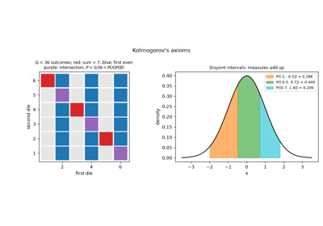
Kolmogorov’s axioms: events as sets, probability as a measure
Bayesian inference#
Bayes’s Beta-binomial update and Laplace’s rule of succession.
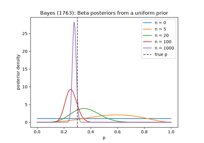
Bayes’s problem: learning a probability from data
Branching processes#
Galton-Watson extinction probabilities and simulated family trees.
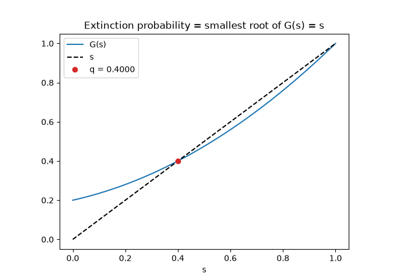
Galton-Watson: the probability a family name dies out
Classical problems#
Buffon’s needle and the St. Petersburg paradox.
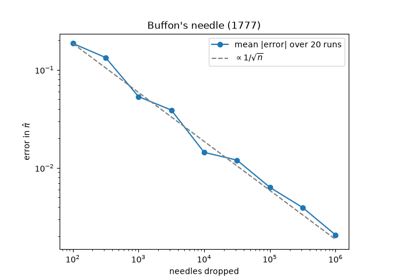
Buffon’s needle: estimating pi by dropping needles
Continuous distributions#
Uniform, exponential, normal, and gamma distributions.

The gamma distribution generalizes the exponential
Discrete distributions#
The problem of points (binomial tails), Poisson’s law of rare events, and the geometric distribution.
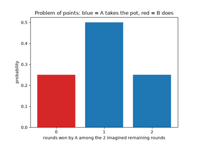
Pascal and Fermat’s problem of points: dividing the stakes
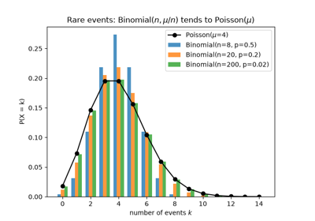
Poisson’s law of rare events: the binomial limit
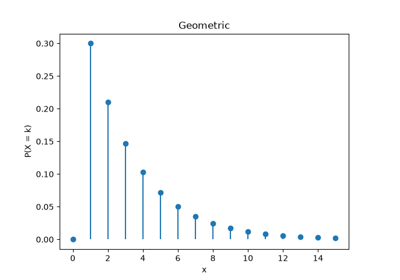
The geometric distribution: waiting for the first success
Limit theorems and inequalities#
Bernoulli’s law of large numbers, the De Moivre-Laplace central limit theorem, and the Bienaymé-Chebyshev inequality, simulated and verified.
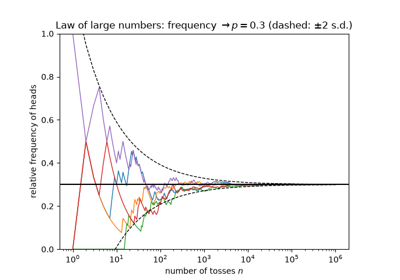
Jacob Bernoulli’s law of large numbers: frequencies settle down
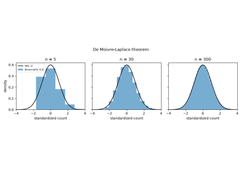
De Moivre-Laplace and the central limit theorem: the bell curve emerges
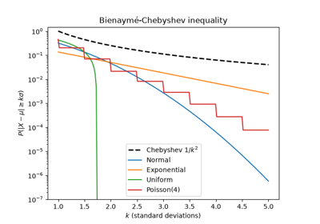
Chebyshev’s inequality: one bound for every distribution
Markov chains#
Stationary distributions and gambler’s-ruin absorption probabilities.

Markov chains: gambler’s ruin as an absorbing chain
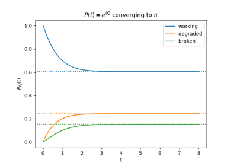
Kolmogorov’s equations: a continuous-time Markov chain
Monte Carlo integration#
Plain, importance-sampling, and control-variate Monte Carlo integration.
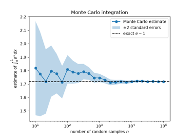
The Monte Carlo method: estimating an integral by random sampling
Queueing theory#
Erlang’s loss formula for telephone traffic.
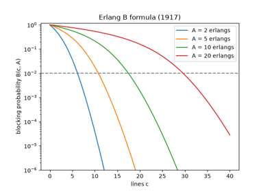
Erlang’s loss formula: how many telephone lines?
Random walks and Brownian motion#
Brownian motion paths and Pólya’s recurrence theorem for random walks.
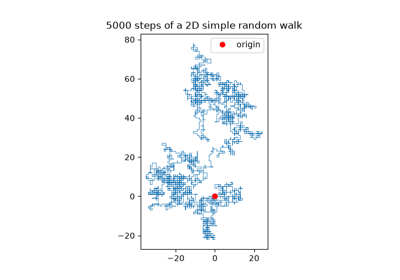
Pólya’s theorem: a drunk man finds his way home, a drunk bird may not